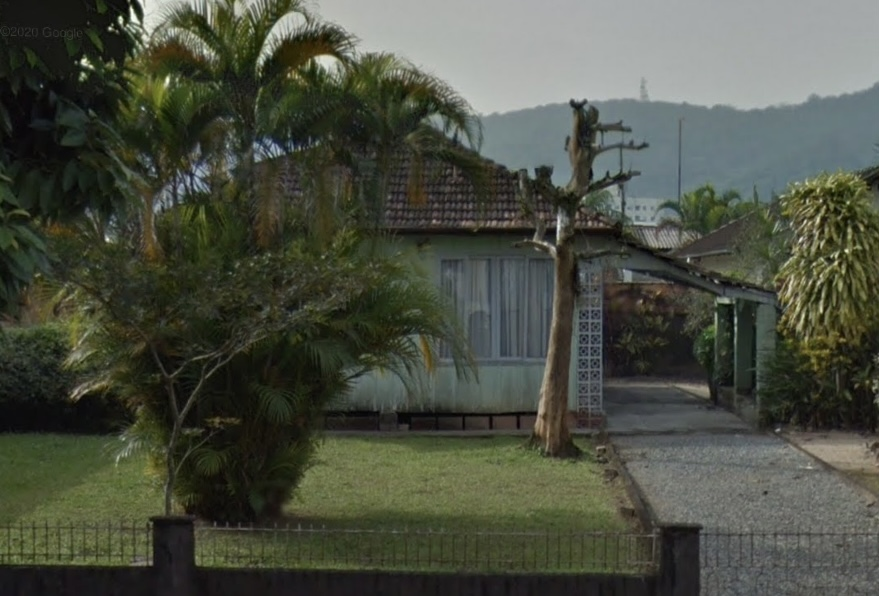

<!DOCTYPE html>
<html>
<head>
	<meta charset="utf-8">
	<meta name="viewport" content="width=device-width">
	<title>GREEN HOUSE </title>
	<link href="greenhouse.css" rel="stylesheet" type="text/css" />
</head>
<script src="script.js">

</script>

</html>


<center>
  
<h1>GREEN HOUSE STORY
</h1>
</center>

  <center>
		
  </center>

<center>
    <em><p><b> Location:1196 R. Orestes Guimarães, Joinville, Santa Catarina

        <svg xmlns="http://www.w3.org/2000/svg" width="16" height="16" fill="currentColor" class="bi bi-geo-alt-fill" viewBox="0 0 16 16">
  <path d="M8 16s6-5.686 6-10A6 6 0 0 0 2 6c0 4.314 6 10 6 10zm0-7a3 3 0 1 1 0-6 3 3 0 0 1 0 6z"/>
</svg> </em></p></b>
  <iframe src="https://www.google.com/maps/embed?pb=!1m18!1m12!1m3!1d3577.242005572666!2d-48.847156885043525!3d-26.28625358340149!2m3!1f0!2f0!3f0!3m2!1i1024!2i768!4f13.1!3m3!1m2!1s0x94deb02ea6e89ccb%3A0xa803c8d269f305ab!2sR.%20Orestes%20Guimar%C3%A3es%2C%201196%20-%20Am%C3%A9rica%2C%20Joinville%20-%20SC%2C%2089204-060!5e0!3m2!1spt-BR!2sbr!4v1646764116488!5m2!1spt-BR!2sbr" width="600" height="450" style="border:0;" allowfullscreen="" loading="lazy"></iframe></iframe> </p> 
</center>  

  <body>
<em><p><b>
The green house was built in 2000 by a humble 65 year old lady
Her goal was to build a big garden, but because of her financial condition it was only possible to plant a few of her favorite trees.
</em></p></b>
  <em><p><b>
    In 2012, at the age of 75, her health deteriorated and she ended up dying as she had no grandchildren or children, anyone who could take care of the house, she ended up being abandoned.
    </em></p></b>
  
   <em><p><b>
     In 2021, on October 21, there was a fire in the house which ended up leaving it completely destroyed.
       </em></p></b>

   <em><p><b>
     According to the Police and Fire Department, it was arson caused by a lit cigarette butt, after the incident the land was purchased so the house was demolished.
     </em></p></b>

  <em><p><b>
    In the face of all this sad situation, what was left were the trees of an old woman who once dreamed.
    </em></p></b>

    <um><p>Interested in the Green House? Click Here!</p></um>
        <p> 
          
          <a href="galeriagreen.html">here</a></p>


<html>
<head>
<um><p>Extra!</p></um>
</head>
<body>
<video width="620" height="340" controls="controls" 
  
<source src="CasaVerde.mp4"
  type="video/mp4">
<object data="" width="320" height="240">
<embed width="420" height="240" src="CasaVerde.mp4">
  
</object>
</video>

</body>

          <a href="galeriagreen.html">here</a></p>

</center>

    <script>
 
function goBack() {
    window.history.back()
}
</script>

<body>
<button onclick="goBack()">Go Back</button>
</center>


<center>

 

<button onclick="window.close()">Close</button>
  
</body>
</html>
